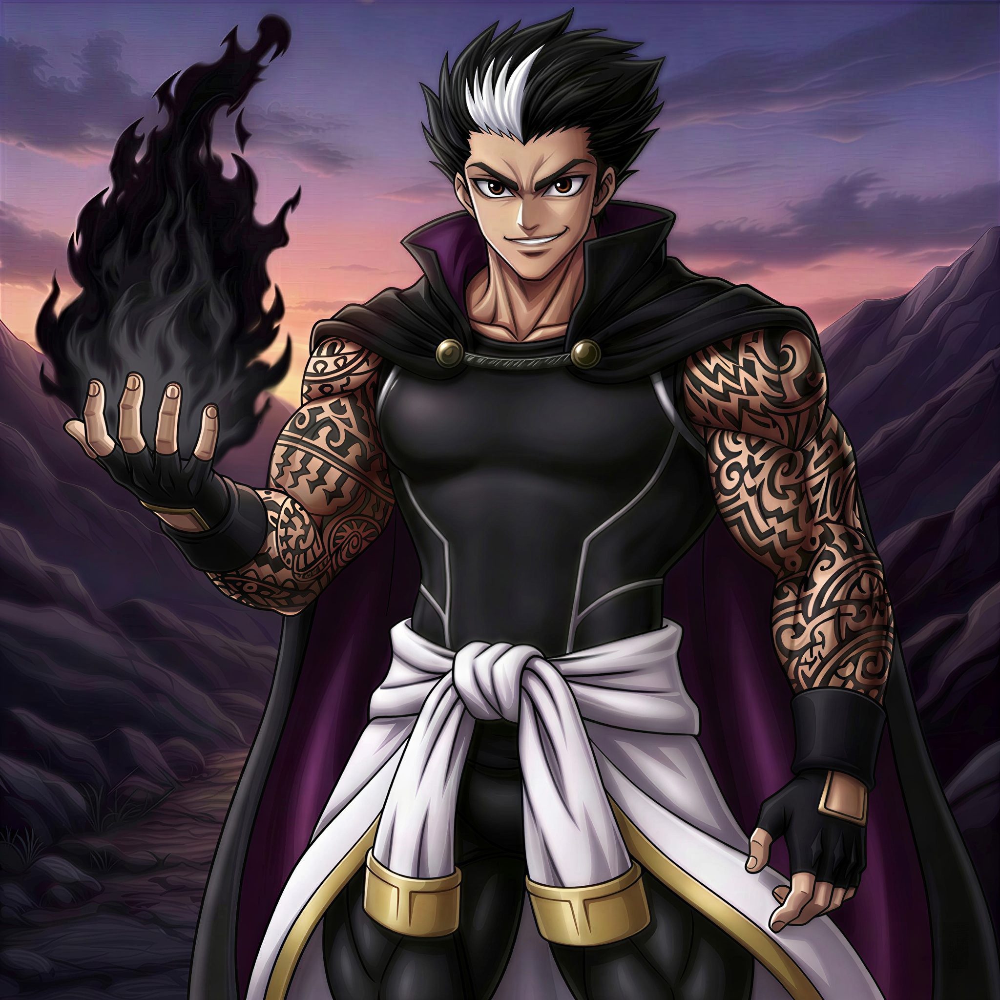
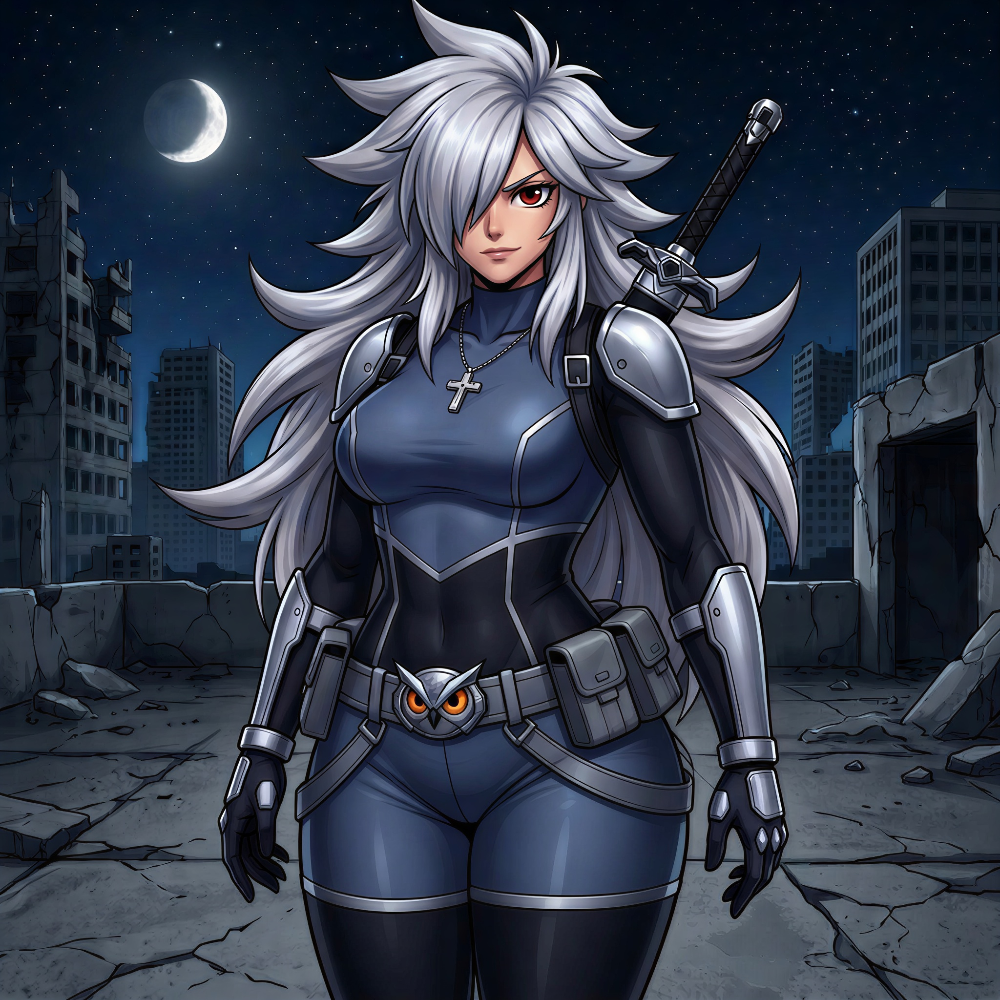
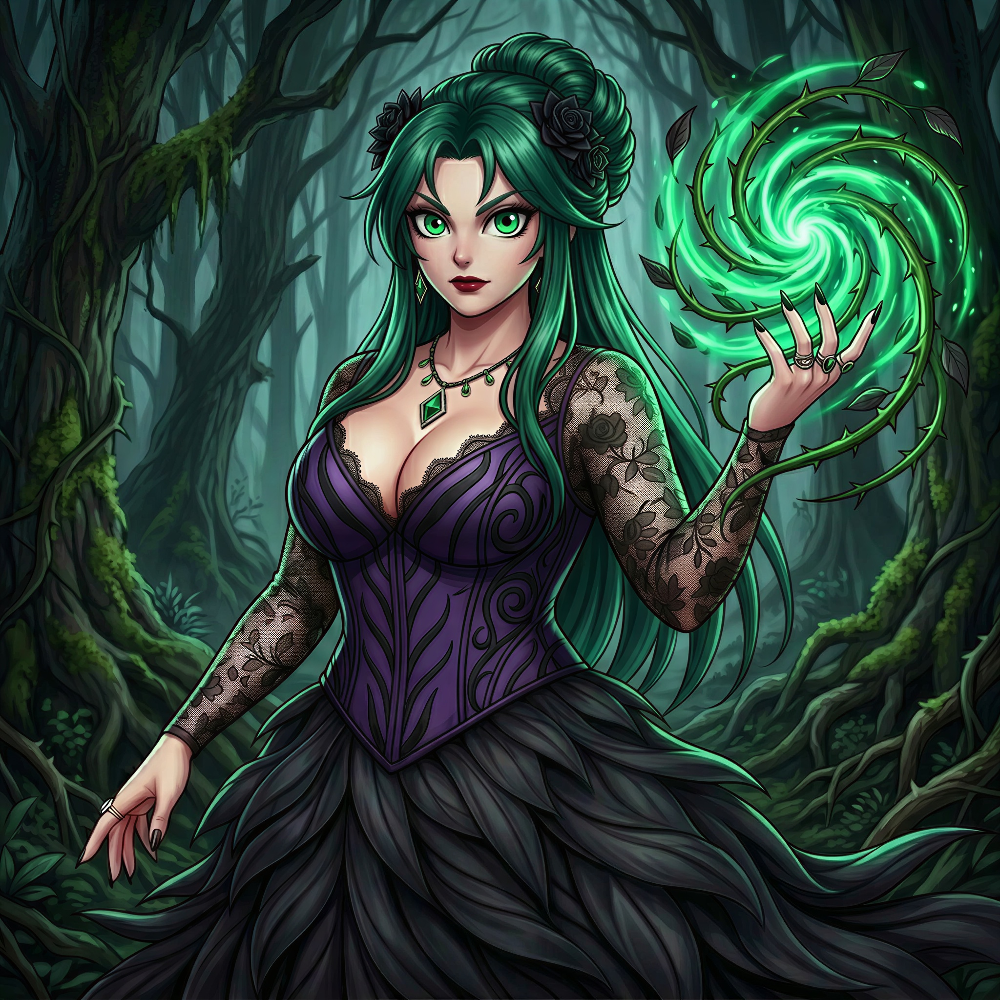

Idade: Desconhecida
História: Ryker Dragomir nasceu na Bulgária e cresceu ouvindo dos próprios pais que sua existência foi um erro, desenvolvendo desprezo por laços afetivos e autoridade. Ainda adolescente, roubou parte da fortuna da família e fugiu para o Canadá, de onde iniciou anos de viagens pelo mundo como caçador e colecionador de artefatos raros. Em uma expedição, encontrou o Voidbrand, um artefato ancestral que marcou seu corpo com tatuagens negras, retardou seu envelhecimento e despertou o poder das chamas negras, destruindo o templo ao perder o controle. Após um longo período de isolamento e autodisciplina extrema, Ryker dominou o Voidbrand e passou a buscar batalhas contra oponentes poderosos para ampliar ainda mais seu poder, cruzando o caminho de heróis e vilões enquanto continua sua obsessiva busca por artefatos e tecnologias únicas para sua coleção. Ele considera as chamas de Igneus inferiores às suas e ocasionalmente se alia aos heróis quando possui interesses em comum.

Idade: 27 anos
História: Leticia Nyx é filha do temido Deadlock e de Zara Vex, que se separaram quando ela ainda era pequena, e por isso cresceu ao lado da mãe, do padrasto e de sua meia-irmã mais nova. Desde criança sonhava em explorar o universo e tocar o infinito, mas carregava a dor de se sentir rejeitada pelo pai, que nunca lhe deu atenção e escolheu Aria como sua verdadeira criação. Ferida no orgulho, Leticia passou anos treinando sozinha e em segredo, enquanto também se dedicava aos estudos, decidida a provar que poderia ser melhor que Aria. Formou-se em Astronomia e, após isso, construiu uma espada com lâmina de lonsdaleíta vítrea e indestrutível, um material mais duro que o diamante. Com essa arma, começou a enfrentar supervilões e monstros para mostrar ao pai que era superior à obra dele, mas com o tempo descobriu que realmente gostava de lutar para proteger inocentes. Ela ainda sente desprezo por Aria e pelos Pulsebreakers, porém é apaixonada por Drake Harper, e esse sentimento acaba sendo um dos motivos de cruzar ocasionalmente o caminho do grupo por mera coincidência.

Idade: Desconhecida
História: Zelara nasceu em Eastoria, uma nação florestal tecnologicamente avançada localizada na Oceania, com habilidades de fitocinese e foi criada pela tribo Haroa em perfeita harmonia com a natureza. Quando forças da Dark Mecha Corps invadiram sua terra, exterminaram seu povo e devastaram vastas regiões da floresta para erguer complexos industriais e instalações militares, ela sobreviveu, aprimorou seus poderes por anos e retornou para se vingar, exterminando os ocupantes e fazendo a vegetação engolir fábricas e máquinas antes de restaurar o ecossistema à força. Desde então, vive em uma mansão luxuosa cercada por uma floresta colossal e conduz uma guerra pessoal contra a poluição industrial, invadindo países, destruindo complexos industriais e matando qualquer um que considere parte da devastação ambiental. Sua brutalidade a tornou persona non grata na Índia e em Bangladesh, onde é conhecida como a Peste Verde e o Cu da Floresta, títulos que aceita com orgulho. Embora ocasionalmente coopere com heróis contra ameaças capazes de devastar ecossistemas, Zelara deixa claro que sua lealdade pertence exclusivamente ao planeta, nunca à humanidade.